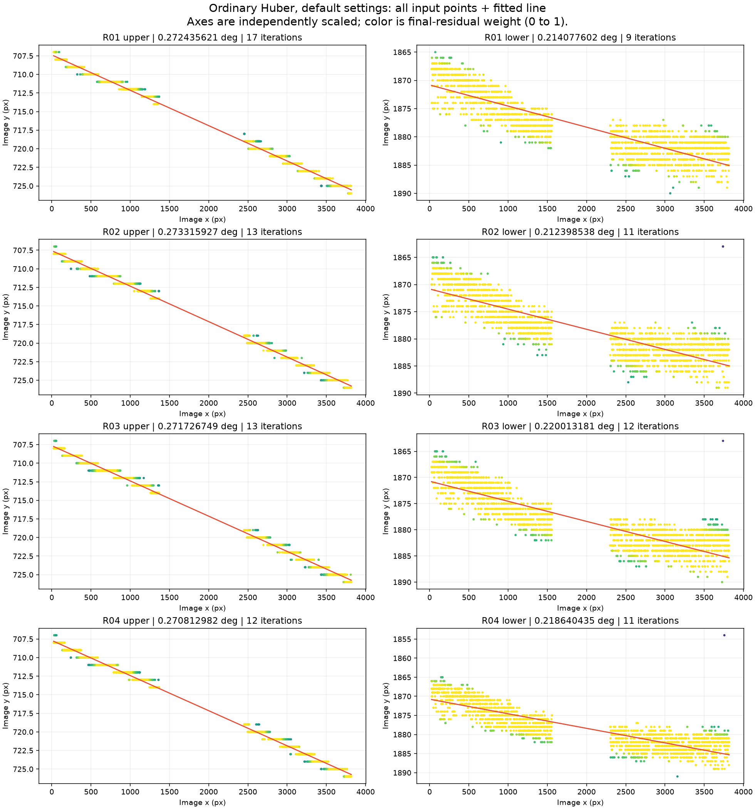
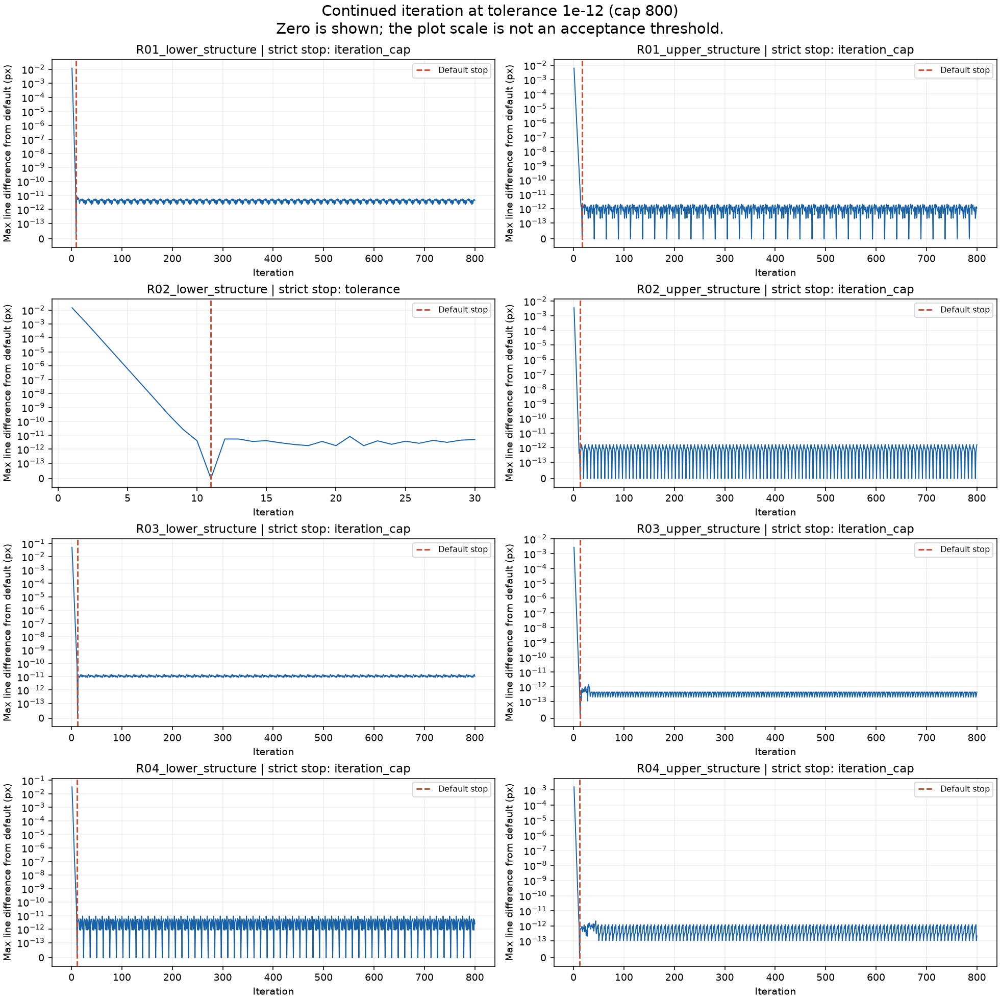

2026-11-01 · 일반 Huber · 3번(반복 상한), 4번(종료 조건) 수렴성 시험
기본 50회 · 10⁻⁸ 설정으로 계산이 충분했는가?
현재 8개 입력에서는 기본 설정을 유지할 근거가 확인됐다.
8개 모두 9–17회에 기본 종료 조건을 충족했다. 상한을 100·200회로 늘려도 계수는 완전히 같았다.
더 엄격한 설정 및 최대 800회 실행과 비교한 최종 직선 위치 차이는 최대 1.286e-11px였다.
엄격한 설정이 모두 수렴했다는 뜻은 아니다. 10⁻¹⁰에서는 2개, 10⁻¹²에서는 7개가 800회에서도 종료 조건을 충족하지 못했다. 이 실행은 반복 제한 종료로 기록했다. 엄격 실행의 마지막 값을 정답으로 간주하지 않았다. 기록된 직선 변화량은 계산 설정 사이의 차이이며 실제 경계 정확도나 θ 보정 오차가 아니다.
1. 입력·방법을 어떻게 고정했나
1차 center.bmp와 2차 center1·center2·center3.bmp의 상·하단 경계점 8세트, 총 23,056개를 사용했다. 상단은 영상당 2,712개, 하단은 3,052개이다. 이전 검증에서 원본 Sobel 계산과 대조한 캐시의 SHA-256과 원본 영상 해시가 그대로임을 확인했다.
가림 구간을 제외한 기존 좌우 가시 영역의 점을 합쳐 상단 하나, 하단 하나의 직선을 구했다. Gaussian, 응답값 임계에 의한 삭제, 거리 기준 삭제·재피팅을 추가하지 않았다. 원래 이미지의 x와 절편을 사용하며 임의 좌표 정규화도 추가하지 않았다.
공식 PyPI의 statsmodels 0.15.0을 이 폴더 내부 전용 가상환경에 설치해 그대로 실행했다. 라이브러리 소스를 수정하거나 C++로 재구현하지 않았다. 매 실행에 새 RLM 객체를 만들었다.
- 직선: y = mx + b, 세로 잔차 r = y − (mx+b)
- HuberT: 기준 상수 1.345
- s = median(|r|) / 0.6744897501960817, τ = 1.345s.
center=0인 실제 RLM 코드와 동일. - 초기값: 기본 최소제곱(OLS). s는 매 반복 갱신.
- 종료 평가값: 원본 코드의
deviance. 반복 상한과 tol 이외 설정은 동일.
deviance는 rho(resid / tmp_results.scale).sum()으로 계산된다. 가중치 계산에 쓰는 MAD 척도 self.scale와 코드상 별개 변수이다. 비교에서는 이 원본 계산식을 변경하지 않았다. 10⁻⁸은 px 또는 각도 허용오차가 아니다.
2. 비교 조건과 실제 종료
A는 공식 기본 설정이다. B–E는 사전에 설명한 민감도 시험 조건이다. D·E가 200회 제한에 걸린 뒤 F–I를 추가해 상한을 400·800회로 늘렸다. 이 확대는 횟수 부족 여부를 확인하기 위한 시험이며 논문의 최적값이나 새 운영 설정이 아니다.
반복 수는 라이브러리 fit_history.iteration 그대로이며 초기 OLS를 1로 센다. '종료 조건 충족'은 실제 마지막 두 deviance의 유한한 차이가 tol 이하인지 직접 확인한 결과이다. 총 72개 조건 실행에서 유한한 직선을 얻었다. 조건 충족 실패를 숫자가 반환됐다는 이유로 성공 처리하지 않았다.
3. 기본 설정의 결과
각도는 atan(m)이며 기계 θ가 아니다. 가중치 감소 점 수는 라이브러리가 마지막 가중 최소제곱에 실제 사용한 값 기준이다. 총 2,788개 점의 가중치가 1보다 작았으며 점을 삭제한 것은 아니다. 이는 보조 관찰값으로, 가중치가 줄어야 수렴 검증을 통과한다는 조건을 만들지 않았다.

점은 전체 표시했다. 색은 최종 반환 계수·s에서 다시 계산한 가중치이다. 마지막 실제 사용 가중치와의 미세한 차이도 results.json에 기록했다. 그래프의 x·y 축 배율은 다르므로 그림의 기울기를 실제 각도로 읽으면 안 된다.
4. 설정 변경으로 직선이 얼마나 달라졌나
같은 입력의 두 직선에 대해 max |(b₂−b₁)+(m₂−m₁)x|를 측정 영역에서 계산했다. 매우 가까운 두 영상 좌표를 직접 빼는 대신 계수 차이로 계산했다.
기본 A와 나머지 모든 설정의 최종 결과 차이는 최대 1.286e-11px, 각도는 최대 2.417e-13°였다. 이 수치를 실제 영상 경계의 정확도로 해석하지 않는다. 임의의 px·각도 합격선을 새로 설정하지 않았다.
5. 엄격한 설정은 왜 반복 제한에 걸렸나
반복 제한에 걸린 실행에서는 최종 직선이 기본 결과 부근에서 극히 작게 변하지만 deviance의 작은 변화가 지정 tol 아래로 내려가지 않았다. 원인은 수치 계산의 정밀도와 평가값 민감도에 관련됐을 가능성이 있으나, 이번 비교만으로 하나의 원인으로 확정하지 않는다.
아래 표는 가장 엄격한 I 실행에서, 기본 A가 멈춘 반복 이후 모든 중간 직선이 A로부터 얼마나 벗어났는지도 확인한 것이다. 마지막 직선만 우연히 비슷했는지 구분한다.

선의 변화는 반복 내내 기록했다. 800회 제한에 걸린 실행의 수학적 수렴을 증명했다고 주장하지 않는다. 다만 이들 설정으로 계산을 연장해도 기본 직선이 의미 있게 이동하는 현상은 관찰되지 않았다.
6. 이번 결과로 정하는 범위
3번: 현재 8개 입력에서 최대 50회는 충분했다. 실제로 모두 17회 이내에 기본 종료 조건을 충족했고 상한 증가가 결과에 영향을 주지 않았다.
4번: 이번 입력의 수치 계산에는 기본 10⁻⁸을 유지하는 것을 권한다. 더 엄격하게 계산해도 직선 변화는 위에 기록한 규모였으며, 엄격한 tol은 오히려 반복 제한에 도달했다. 이는 현재 입력에 대한 수치적 근거이며 다른 촬영 조건 전체의 보증이나 θ 보정 성능 검증이 아니다.
더 작은 tol이 자동으로 더 정확한 경계나 더 좋은 θ 보정을 뜻하지 않는다. 이번 작업은 τ 기준값 탐색, 점 선택 변경, 새로운 통계 가설검정, Y/θ 알고리즘 변경을 포함하지 않는다.
72개 실행 전체 기록
실행 시간은 반복 측정한 성능 벤치마크가 아닌 해당 실행의 참고 기록이다.
원본 이미지 경로
- R01:
C:\Users\SSAFY\Desktop\[기업연계_세메스] 교보재\[기업연계_세메스] 교보재\SSAFY Test Image Set\center.bmp - R02:
C:\Users\SSAFY\Desktop\LSJ_Private\자율PJT\analysis\second_data_inspection\extracted\일부 데이터 추출\기준 위치\center1.bmp - R03:
C:\Users\SSAFY\Desktop\LSJ_Private\자율PJT\analysis\second_data_inspection\extracted\일부 데이터 추출\기준 위치\center2.bmp - R04:
C:\Users\SSAFY\Desktop\LSJ_Private\자율PJT\analysis\second_data_inspection\extracted\일부 데이터 추출\기준 위치\center3.bmp
근거와 재현 파일
실행: .venv/Scripts/python.exe run_experiment.py. 보고서 생성은 기존 Python의 matplotlib을 사용했다. 원본 이미지·기존 알고리즘 코드는 수정하지 않았다.